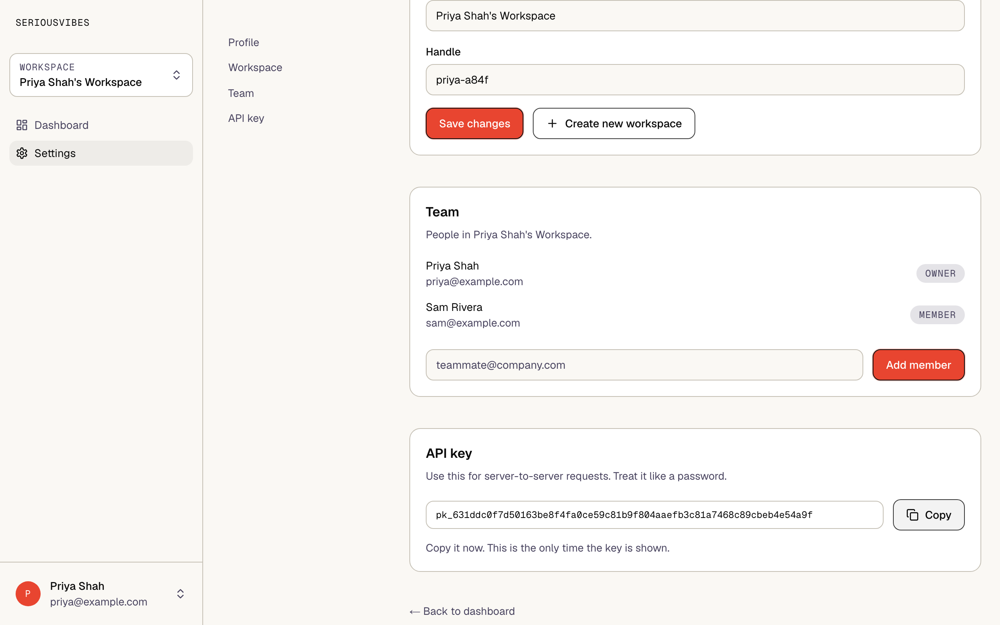

A working multi-tenant app with auth, tests, design tokens and a copy guide. Your coding agent reads the rules before it writes a line, and the code it copies already follows them.
npx degit sptr11/seriousvibes myapp

Codex, Cursor, Copilot and most other coding agents read AGENTS.md automatically. Claude Code reads it through CLAUDE.md.
"Add invoices to the workspace." One feature per prompt.
Routes, tests and components that already follow every rule, so the agent's first draft matches them.
Each one is cheap to prevent on day one and expensive to fix after launch.
workspace_id, and the rules require a cross-workspace test for every route.AGENTS.md. Vitest calls routes in-process, and the suite runs in under a second./health route that only answers when both processes are up, plus a deployment guide for port collisions and failed migrations.Requires Node 20+ and a Postgres database.
npx degit sptr11/seriousvibes myapp cd myapp && git init npm install cp .env.example .env # set DATABASE_URL and JWT_SECRET npm run migrate npm run dev # web on :3000, api on :3001
You get sign up, log in, workspaces, team members and API keys, all working.
Do them in order. Every file your agent writes afterwards inherits them.
Replace "seriousvibes" everywhere, rewrite the landing page, delete this website's folder, and clear the change log. Otherwise the agent copies starter text into your product.
agent can do thisDescribe your product in one paragraph and add your domain rules. A rule that isn't written down won't be followed.
agent can do thisPick three voice adjectives and rewrite the examples using your product's nouns.
agent can do thisChange the color, radius and font values. Keep the token names.
agent can do thisFour per route at minimum: happy path, bad input, wrong role, another workspace's user.
A real JWT_SECRET, your domain in CORS_ORIGIN, and an uptime check on /health.
Open the fresh repo in your agent and it offers to do steps 1–4. It asks for a name, one sentence about the product, three voice adjectives and your brand colors, then shows you the diff.
Each one is easy to read and easy for an agent to get right.
Not included: marketing pages, billing, admin dashboards. Add them once you have users who need them.